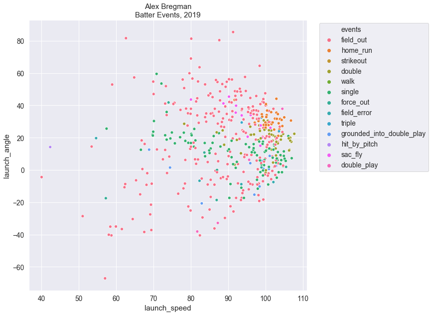

Background Info
Statcast: is an advance tool that combines doppler radar, and high definition video processing to measure the speed, acceleration, and other moving properties of objects in motion. Statcast is a result of the combined technology of TrackMan, and ChyronHego. Stacast is used in various sports, including Major League Baseball to track in-game biomechanics. In MLB, this is primarily for pitchers and hitters, although it captures all game related activities. The data collected has been used to evaluate player performances, and to help diagnose performance problems that may prevent injuries.
Why is this important?
Information gathering technology can provide a competitive edge in sports (and other industries).
Statcast in particular, can generate roughly seven terabytes of data, and this information
can provide insights that include aid in scouting top talent, and player development. These insights
can be powerful, but insights are unlocked from data by good analytics, and having a keen
understanding of the data, and the tools available to analyze it, are essential at driving value from
gathered data.
Resources
- Statcast
- Cole, Bryan (August 21, 2014). "Making sense of the video tracking systems". Beyond the Boxscore. Retrieved Nov 16, 2019.
- Trackman Baseball. Retrieved Nov 16, 2019.
- Day, Zach (December 5, 2019). "Measuring Pitching with TrackMan: The Secrets of Fastball Spin". Baseball prospectus. Retrieved Nov 16, 2019.
- Sheinin, Dave (June 1, 2017). "These days in baseball, every batter is trying to find an angle. Retrieved Nov 16, 2019
- Waldstein, David (May 24, 2018). "M.L.B. Hired Scientists to Explain Why Home Runs Have Surged. They Couldn’t". Retrieved Nov 29, 2019
Taking it home. Using Statcast data to find the barrel zone.
Efforts to identify the home run optimal batting parameters has been an active area of research for sport leagues, sports enthusiasts, and even physicists. Sawiki GS, Hubbard, M (Oct 13, 2003). "How to hit home runs: Optimum baseball bat swing parameters for maximum range trajectories". American Journal of Physics 71, 1152 (2003). Retrieved Nov 29, 2019. Siegel, P.B. (March 21, 2017). "Using Statcast to lift the discussion of projectile motion". American Journal of Physics 85, 313 (2017). Retrieved Nov 29, 2019. This research was limited by the availability of data, or it was until the advent of technologies like Statcast. Statcast combines advance doppler radar, and high definition video processing to generate a wide portfolio of baseball player biometrics, and batting event outcomes. This era of big data has made home run mechanics easier to decipher. When considering batting behaviors in particular, the batting launch angle, and launch speed have become key indicators of home run events. Kegan, David (March 19, 2010). "What Is the Best Launch Angle To Hit a Home Run?". AAPT. Retrieved Nov 29, 2019. In fact, these findings have had an impact on the average MLB launch angle and launch speed, with players honing their own batting behaviors in search of the barrel zone. Sheinin, Dave (June 1, 2017). "These days in baseball, every batter is trying to find an angle". The Washington Post. Retrieved Nov 29, 2019. The objective of this post is to confirm these reports by analyzing the batting events for the top home run batters in the 2019 World Series Team. More specifically, this blog will address the following:
- Determine the 2019 top home run batters in the Washington Nationals and Houston Astros.
- Compare batter events between players.
- Determine which player had the longest hit distances.
- Determine if launch speed and launch angle have a bearing on home runs.
- Compare the launch speed and launch angle between players.
- Determine the impact of pitch velocity on home runs events.
- Determine the player's home run zone.

Figure 1. Statcast apparatus. Image retrieved 11-26-19 from live-production.tv
Methods
Identifying top home run batters in 2019 World Series Teams
The top home run batters for the 2019 World Series teams was identified by analyzing the team statistics
for each team. The team statistics was obtained from the website Baseball-reference. Since the data was unavailable in a
downloadable format, the python libraries requests, lxml.html, and pandas were used to harvest this data
from each team webpage. The code used to gather this data can be downloaded in this jupyter notebook Jupyter Notebook: Web scraping MLB Team Statistic Data. The 2019 World Series
teams were the Washington Nationals
(WSN), and the Houston Astros
(HOU). To identify the top home run batters, the data was analyzed using the python libraries
pandas, numpy, matplotlib, and seaborn. The code used to analyze this data can be downloaded in this
jupyter notebook Jupyter Notebook: Top Home Run Batters in the 2019 World Series Teams.
Gathering Statcast Data for the top Home Run Batters in the Astros and Nationals
The 2019 Statcast data for each player was retrieved from Baseballsavant.mlb.com. Although this website enables users to query their database, it does not provide the option to download the results of an advance search. To this end, a python script developed by Alan R Kessler. was used to capture data from advance StatCast searches, and save it into an sqlite database. The python libraries sqlite3 and pandas was then used to query and save the data into csv files. Since Statcast uses integer IDs to store player identities, the names corresponding to each player ID was determined by inspecting the player Statcast page, and searching through the
section id="player" tag. This ID number
was then used to filter for these players in the Statcast 2019 season database. The code used to analyze
this data can be downloaded in this jupyter notebook Jupyter Notebook:
Use Python to Harvest Statcast Data.
Analysis
Python was used in this project. Data was loaded and manipulated using the pandas library. The matplotlib and seaborn libraries were used to visualize data. The scipy, scikit_posthocs, sklearn, and mlxend libraries were used in the statistical analysis. The Shapiro-Wilk test was used to test for normality, while the Barlette's test was used to test for equal variance. An ANOVA and Tukey's post hoc test was used to test for differences between players, and a logistic regression analysis was used to determine if launch speed and launch angle are predictors of home run events. A Pearson Correlation and Spearman R test was conducted where appropriate. Detailed methods can be found in the jupyter notebook. Jupyter Notebook: Top HR player analysis.
Results
Alex Bregman (Astros), Anthony Rendon, and Juan Soto (Nationals) were the top home run
batters during the regular season
2019 Season team data harvested from www.baseball-reference.com confirmed that during the regular
season, Alex Bregman was the top home run (hr) batter, leading the Astros with
41. Meanwhile, for the Washington Nationals, Anthony Rendon, and Juan Soto were the top home run
batters, both with 34 home runs (Figure 2, Figure 3).
{kind=link}
Figure 2. 2019 Regular Season top home run batters for World Series Teams

Figure 3. The 2019 regular season home run totals for the World Series teams, by players. Houston Astros (left panel) and Washington Nationals (right panel).
When taking the playoffs and the world series into account, Alex Bregman maintained his home run lead (49 hr), while Juan Soto (38 hr) outscored Anthony Rendon (37 hr) by 2 home runs. (Figure 4)

Figure 4. Final home run totals for the top home run batters in the 2019 World Series.
Bregman and Soto have higher walks events than Rendon, but Rendon has more singles, and
double.
There were seventeen possible batting outcomes. These outcomes range from field outs (the most
common events), to fielders choice (Figure 5). The top six events, by count, were field outs,
strikeouts, walks,
singles, doubles, and then home runs.
Although this order is used to cluster player batting
events in Figure 5, the rankings by magnitude varies by player. Bregman's batting events ranks were
as followed: 1) Field outs, 2) walks, 3) strikeouts, 4) singles, 5) home runs, 6) doubles.
Rendon: 1) Field outs, 2) singles, 3) strikeouts, 4) walks, 5) doubles, 6) home runs.
Soto: 1) Field outs, 2) strikeouts, 3) walks, 4) singles, 5) home runs, 6) doubles.
The total
batted events by player were 765 for Bregman, 711 for Rendon, and 730 for Soto. Interestingly, Soto
had 50 more strikeouts than both players, but managed to out score Rendon in HR percentage of
batting events
Jupyter
Notebook: Top_HR_Player_Analysis Obj 1: Evaluate Player Batting Events
{kind=link}
Figure 5. Plate appearance outcomes for Alex Bregman (blue), Anthony Rendon (orange), and Soto (green).
Soto hit the balls farther than Bregman and Rendon.
Statcast also tracks hit distance, and of the three players, Soto had the highest mean distance at
404
ft, followed by Rendon at 395 ft, and Bregman at 381 ft (Table 1). The error bars for the mean
distance all balls traveled by players suggest that this difference is not significant (Figure 4).
An analysis of variance was conduced to test the hypothesis that the mean hit distance did not vary
among players. The hit data for each players is normally distributed (Figure 4), and all groups had
equal variance (Shapiro-Wilk and Barlette's test data in
Jupyter
Notebook: Top_HR_Player_Analysis Obj2 Step 4a - Obj2 Step 4c. The Analysis of Variance test
confirmed that the mean hit distance does vary significantly between players (p = 3.845e-05), and a
Tukey's Post Hoc test suggest that the hit distance between Bregman and Rendon (p = 0.015183), and
Bregman and Soto (p = 0.001000).
Table 1. Summary statistics for home run distances by players.


Figure 4. Distribution of home run travel distances by players.

Figure 5. Players home run distributions through a density estimation plot.
Home Run events for players are within the Barrel Zone (20-40 ° and launch speeds +90
mph.
Prior studies using Statcast data indicate the batter launch speed and launch angle are key home run
parameters.
Sheinin, Dave (June 1, 2017). "These days in baseball, every batter is trying to find an angle".
The Washington Post. Retrieved Nov 29, 2019.
To confirm these observations, a scatter plot of all batted events were plotted against their launch
speed and launch angle (Figure 6 - 9).
Indeed, the majority of home run events for all players clustered between 20° - 40° launch angles,
and the launch speed was above 90 mph. These findings are consistent with other reports
Petriello, Mike (September 22, 2016). "Barreled up: New Statcast metric shows highest-value batted
balls".
MLB News. Retrieved Nov 29, 2019.
Soto's Home Runs have the highest launch speed, while Bregman had the slowest.
To evaluate the launch angle and launch speeds of home runs by player, individual scatter plots were
prepared (Figure 10). The plots suggest that Soto hit the ball with more force, while Bregman had a
slower launch speeds than both Rendon and Soto. When comparing the actual summary statistics for these
values (Table 2), Soto did indeed have the highest launch
speed (M 105.61 mph ± 4.39 SD), followed by Rendon (M 101.36 ± 2.76 SD), and ending with Bregman (M
99.87 ± 3.46 SD). A Kruskal-Wallis H-test for independent samples was conducted to test the
hypothesis that there was no statistically significant difference in launch speed between players.
This hypothesis was rejected (statistic=37.90, pvalue=5.91e-09), and a Dunn Post Hoc analysis
confirmed that Soto's launch speed is significantly higher than both Bregman (p = 4.14e-09) and
Rendon (p = 0.000133).
When comparing launch angles, Rendon had the largest mean angle (M 30.97 ± 5.00 SD), followed by
Bregman (M 39.59 ± 5.64 SD) and ending with Soto (M 29.51 ± 5.32 SD).
{kind=link}
Figure 6. Home runs for all batting event outcomes for all players in the 2019 season cluster in barrel zone. No home runs in blue (legend label=0), and home runs in orange (legend label=1)
{kind=link}
Figure 7. Alex Bregman's batting event outcomes by launch angle, and launch speed.

Figure 8. Anthony Rendon's batting event outcomes by launch angle, and launch speed.
{kind=link}
Figure 9. Juan Soto's batting event outcomes by launch angle, and launch speed.

Figure 10. Relationship between player's home run launch angle, and launch speed.
Table 2. Summary statistics for player's home run launch angles, and launch speeds.
{kind=link}
Predicting events with Machine Learning.
Machine learning has become a ubiquitous tool in data science. It enables users to combine advance statistics, and computer science, without having to conduct all the complicated calculations. So far, Figure 6-9 in this blog suggest that launch speed and launch would be good parameters for identifying home run events. Although visually convincing, advance statistical techniques would need to be used to determine their use in predicting if a batting events will result in a home run.
Finding the right model: Logistic Regression versus Support Vector Machine
There are several models that can be used to build a predictive algorithm. Since the target for this dataset are home run events, which are dichotomous by nature ("yes" or "no"; 0 or 1), a logistic regression model seemed ideal. Although, given the circular clustering of the home run data in Figure 6-9, would suggest that any linear models would underperform in their classification reports. In fact, a logistic regression model yielded an accuracy score >90% for both the training and test set, but performed terribly in the confusion matrix analysis. The logistic regression model did well at predicting true negatives (which contributed to the high accuracy score), but it did terribly at classifying true positives, and false negatives. In fact, the f1-score for home runs was ~0.30 (data not shown). If you're wondering why, there are two primary reasons: 1) most events are not home runs, so by the numbers, the logistic regression model will correctly classify these events, 2) the home run events are cluster in a circle, and surrounded by non home run events. This makes it difficult for a decision boundary to be established using a logistic regression model. For these reasons, SVM is a more appropriate tool, as it allows for complex modeling of data using non linear decision boundaries.
Support Vector Machine Modeling Predicts Home Runs 70% of the time
The non linear SVG was conducted using the gamma and C parameters set to 1. The accuracy score for both the training and test set was 97%. Plotting a subset of this data showed that the model built a decision boundary around the area home runs are scored (Figure 11). Fine tuning of the SVM parameters would be required to in order to optimize this boundary. Tests to validate the performance of this model showed that the model classified true negatives 99% of the time, false positives 1% of the time, false negatives 32% of the time, and true positives at 68% of the time (Figure 12). Moreover, the classification report showed that the model had a precision score for home runs at 78%, a recall score at 67%, and an f1-score at 72%.
{kind=link}
Figure 11. Decision Boundary for a subset of batted events using the machine learning model SVG. Home Run events are predicted to fall within the Orange boundary, in triangles. Whereas, non home runs reside in the blue region.
{kind=link}
Figure 12. Confusion Matrix for SVG hun run prediction model.
Table 3. SVG model Classification Report.
{kind=link}
Rendon hit faster pitches than Soto. Statcast not only tracks the speed of batted events, but it also tracks the speed of the ball as it leaves the pitcher's hand. In the 2019 season, the mean pitch speed for all pitches was 88.9 mph ± 5.8 SD (N = 187529, any feature with a missing value was excluded). The the mean pitch speed that Bregman (N = 749, M 89.3 ± 5.7 SD), Rendon (N= 711, M 89.9 ± 5.5 SD), and Soto (N = 730, M 88.9 ± 5.8 SD) encountered at the plate seemed consisted with the season average. Interestingly, the mean pitch speed for events that resulted in a home runs for each player (Table 4). Both Bregman and Rendon had a slight reduction in their mean pitch speed, while Soto hit faster pitched balls. To determine if there were differences in the pitch velocities the players encountered at the plate, an the hypothesis that there was no difference in the mean pitch speeds Bregman, Rendon, and Soto encountered on the place, a Kruskal Wallis H-Test for Independent samples was conducted. This test was used because the pitch speed data for each player was not normally distributed(confirmed by distplot and Shapiro-Wilk test, analysis in jupyter notebook). The Kruskal Wallis H-Test rejected the null hypothesis (statistic=11.371302631364896, pvalue=0.003394321754529458), and a Dunn's post hoc test indicates that the mean pitch speed between Soto and Rendon was significantly different (p = 0.002238), sugesting that overall, Rendon encountered faster pitched balls than Soto, but Soto scored more home runs from faster pitched balls than Rendon.
Table 4. Summary statistics for the pitch velocity "release_speed" associated with all home runs.


Figure 13. Distribution of home run pitch velocities by batters.
{kind=link}
Figure 14. Alex Bregman's batting home run zone.
{kind=link}
Figure 15. Anthony Rendon's batting home run zone.

Figure 16. Juan Soto's batting home run zone.